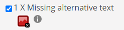

To test the accessibility of our webpage, we used a google chrome extension called "wave". Its both a website and a chrome extension. We tested the website one page at the time, starting with the front page. And this was how it looked like:

This was because we didnt have alt-text on the images on the front page, so we added that.
Then we tested the reflection-essay. It didnt have any errors. However the fun-page had a couple of them. Four of the errors was the same problem as on the main page.
We didn't have any alt-text, so we added that on this page too. The other error were about contrast (see pictures below). The black text didn't have enough
contrast to the dark purple background color. This can be a challenge for people with a weak sight or people that don't see as bright as the average person.


Beside the automated test, what we also look for when designing a web page with good accessibility was making sure the text had alternative fonts, so the text still have
a font on devices without the primary font. After the automated test told us to add alt to pictures we also added that, but since the pictures arent important in this task
(as we are graded of the layout and not the content), we used many of the same pictures.
We also had contrast in mind, altough we got a contrast error in the fun-page. We used black on yellow on the rest of the site and that was because not only does it
fit very well with the OsloMet pictures, but the colors also have a great contrast.